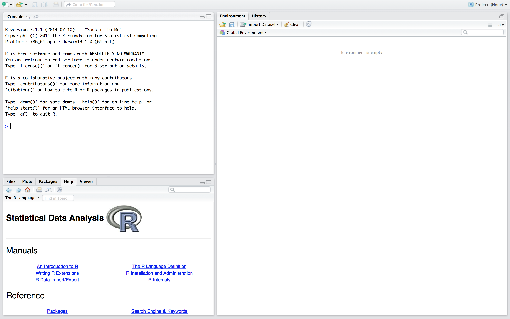
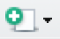
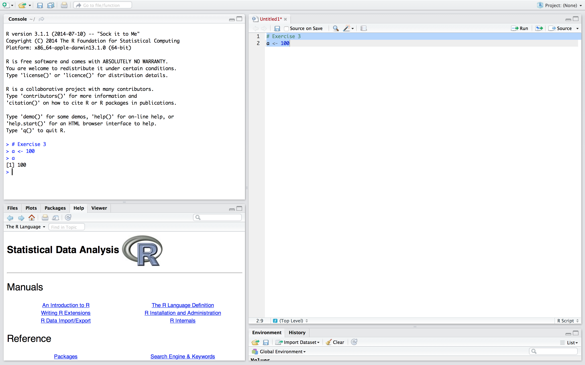

Code
# Exercise 3
a <- 100In this exercise we will get acquainted with R. A convenient way to work with R is with RStudio, as RStudio adds many features and convenient accessibility options to the plain R you have obtained from http://r-project.org. Most of these features go beyond the scope of this course, but as you will develop your R skillset, you might run into the need for RStudio at a later moment. Best to get to know RStudio now.
If you have no experience with R, you will learn the most from following this document. If you have some experience with R already, I suggest you try solving the questions without looking at the answers first. You can make the code be shown by pressing the code button.
If you have any questions or if you feel that some code should be elaborated, please ask me.
RStudioThe following window will appear. 
RStudio is divided in 3 panes, namely the console, the environment/history pane and the pane where we can access our files, plots, the help files, make packages and view our data objects. You can change the order of the panes to your liking through RStudio’s preferences. I did, that is why your pane layout might differ from the layout in the above screenshot.
If we open an R-script (i.e. a file that contains R code), a fourth pane opens.
R-script.In the top left you will find . Click it and select R-script.
A new pane opens, and we can start typing our code. It is preferable to work from an R-script instead of directly working in the console for at least the following reasons (there are many more).
RStudio caches files even if they are not saved.R-script and data, others are able to exactly reproduce your work. Reproducibility is becoming increasingly more important, and this is where RStudio excells.R-script# Exercise 3
a <- 100The # tells R that everything that follows in that specific line is not to be considered as code. In other words, you can use # to comment in your own R-scripts. I used # here to elaborate that the following line is the code from exercise 3.
The line a <- 100 assigns the value 100 to object a. When you run your code, it will be saved. The value 100 and the letter a are chosen to illustrate assigning in R. You might as well assign 123 to banana if you like. Really, anything goes.
Your code is executed and now appears in the console. If you type a in the console, R will return the assigned value. Try it. 
The shortcut Ctrl-Enter or Cmd-Enter is your friend: it runs the current selection, or, if nothing is selected, the current line. if Ctrl-Enter or Cmd-Enter yields no result, you probably have selected the console pane. You can switch to the code pane by moving the mouse cursor and clicking on the desired line in the code pane, or through Ctrl-1 (Windows/Linux/Mac). Alternatively, you can move to the console through Ctrl-2 (Windows/Linux/Mac).
This is how you enter and run code in R by using RStudio.
Practical_1.R in a folder named PracticalsYou can use the standard Ctrl-s (Windows/Linux) or Cmd-s (Mac) or click on the icon  in the code pane.
in the code pane.
Your document is now saved. We saved it in a separate folder so that we are able to create a project out of our practicals.
 in the top-right corner of
in the top-right corner of RStudioSelect New Project, click Existing Directory and navigate to the folder where you have just saved your code. When all is done, click on Create Project
You will notice in the files pane that a file Practicals.RProj has been created

The possibility to categorize your work in projects is one of the benefits of using RStudio. Within a project, everything is relative to the .Rproj file. This means that if you share the folder with someone else, this someone only has to open the .Rproj file to be able to access and run all code and documents involved with this project. Again, when considering reproducability of research, working in projects is a huge advantage.
# store the value
a <- 100
# verify that it is storred.
a[1] 100# a squared
a^2[1] 10000b <- a + a
b == a + a[1] TRUETrue! R is telling us that the equality we tested is indeed true. In other words, everything before the == is equal to that which is posed after the ==.
c <- b^2 * (a / b)
sqrt(c^5) * (a / b^6)[1] 0.08838835Nice! But anything beyond a couple of decimals may not be relevant.
round(sqrt(c^5) * (a / b^6), 3)
# or, alternatively
d <- sqrt(c^5) * (a / b^6)
round(d, 3)[1] 0.088
[1] 0.088Do you notice that the first solution is shorter, but the second is much more insightful? If you share your code, or plan to use it later on, clarity is of great importance. A small effort now, saves you hours later.
End of Practical 1. Now you know how to use R as a calculator. Play around with R and R-studio if you like.